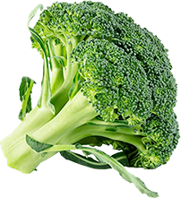
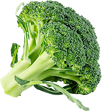

Quem sou eu
Sou zootecnista formada pela Universidade Federal de Pelotas e especializada em Nutrição de Cães e Gatos e, Ciência e Tecnologia de Alimentos pela Faculdade Iguaçu.
Sou membro da Sociedade Brasileira de Nutrição e Nutrologia de Cães e Gatos e ao longo dos anos, tenho estudado e realizado diversos cursos de aprimoramento na área, mantendo-me atualizada sobre as melhores práticas e os avanços mais recentes.
Minha abordagem é baseada em uma combinação de evidências científicas, realidade atual do tutor, experiência prática e acima de tudo muito amor pelos animais.
Hoje, como nutricionista pet, acredito que uma alimentação adequada é fundamental para a saúde, bem-estar e longevidade dos nossos pets. Por isso, estou aqui para te orientar de maneira sensata e consciente, te dando toda a autonomia que você merece na hora de alimentar seu bichinho.

 


NUTRIÇÃO ESTRATÉGICA & INDIVIDUALIZADA
Minha forma de trabalho
- Sou contra extremismos nutricionais.
- Não trabalho com dietas cruas.
- Analiso exames e solicito, se necessário.
- Busco sempre avaliar a sua realidade e a do seu pet priorizando a individualidade.
- Dietas naturais com poucos ingredientes e que sejam fáceis de encontrar.
- Não trabalho com retorno, pois acredito que o acompanhamento mensal é muito mais proveitoso para ambas as partes. Ficamos em contato a todo momento!
Meus serviços
-
Dietas para animais saudáveis
Adaptadas às necessidades específicas de cada indivíduo.
-
Dietas coadjuvantes
Para animais com multipatologias (dermatites, renal, pancreatite, DII, urolitíases, neoplasias, diabetes, hepatopatias, entre outras).
-
Programa de perda de peso
Para pets obesos, promovendo uma perda de peso saudável e consciente.
-
Modulação intestinal
Protocolos para animais em disbiose, visando o equilíbrio intestinal, melhora da digestão e absorção de nutrientes.
-
Acompanhamento para filhotes
Ajustes periódicos garantindo um desenvolvimento saudável e seguro até a fase adulta.
-
Nutracêuticos
Prescrições que auxiliam na dieta prescrita e na prevenção de doenças, de acordo com as necessidades do seu pet.
-
Consultoria para empresas petfood
Desenvolvimento de produtos, rotulagem conforme legislação vigente e suporte mensal.
-
Pacotes de acompanhamento
Mensal, trimestral, semestral e anual com melhor custo-benefício.
Como funciona a minha consultoria?
-
Bate-papo inicial
Conheço melhor o seu pet e discutimos seu histórico de saúde, preferências alimentares, peso, raça, idade e exames recentes, garantindo um atendimento personalizado e eficaz.
-
Definição da dieta
Juntos, vamos escolher a melhor opção de alimentação (ração, mix feeding ou AN), levando em conta as preferências do seu pet e a rotina da família.
-
Plano personalizado
Dependendo da complexibilidade em até 24 horas você receberá o plano nutricional com todas as orientações necessárias.
-
Acompanhamento mensal
Durante 30 dias, você terá suporte pelo WhatsApp para tirar dúvidas e solicitar ajustes na dieta, sem custo adicional.
+0
vidas transformadas
0
países atendidos
Modalidades de atendimento
On-line
Para todo Brasil e mundo Mais disponibilidade de horários, inclusive a noite.
Domiciliar
Morumbi, Vila Sônia, Butantã, Vila Andrade, Taboão da Serra. Demais regiões conferir disponibilidade.
Presencial em clínicas
Entre em contato e descubra o local mais próximo de você.
Depoimentos
Veja como a consultoria nutricional transformou a vida de pets e seus tutores.
Acredito que cada animal é único
e tem necessidades nutricionais específicas. Por isso, busco compreender todas suas particularidades e construir um plano que se encaixe perfeitamente no dia a dia do animal e na dinâmica familiar. Afinal, nossos pets fazem parte da nossa vida e, como nós, merecem atenção e cuidado especial. Conte comigo!